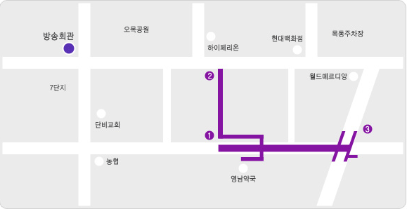

한국콘텐츠진흥원에서 추진하고 있는 인력양성사업 중 전국 미디어관련학과
교수를 대상으로
"3D입체 콘텐츠제작
워크숍" 과정을 개설하고 교육생을
모집하오니 많은 관심과 참여 바랍니다.
■ 교육목적
ㅇ전국 미디어관련학과 대학교수의 차세대 미래형콘텐츠 실무제작에 대응할
수 있는 효율적인
Stereoscopic 3D
Shooting 및 Editing Technique 콘텐츠
제작 능력 배양
ㅇ다양한 방송분야 일반과정의 세분화된 개설을 통한 콘텐츠진흥원의 교육
영역 확대
■ 교육개요
ㅇ과 정 명 : 미디어관련학과 교수 3D입체 콘텐츠제작 워크숍
ㅇ접수기간 : 2010. 7. 5(월) ~ 7. 16(금) 17:00까지
ㅇ교육기간 : 2010. 8. 16(월) ~ 8. 20(금) / 5일간
ㅇ교육대상 및 인원 : 미디어관련학과 교수 20명
ㅇ선발방법 : 접수기간 내 선착순 접수
<신정자가 많을 경우 내부기준(학교, 학과 및 전공 안배 등)에 의해 선발>
ㅇ교 육 비 : 100,000원(카드 및 계좌이체) 신청바로가기
ㅇ교육내용 : Stereoscopic 3D Shooting 및 Editing Technique 등
| 일 시 |
강 좌 명 |
교 육 개 요 |
8. 16
(월) |
13:50~14:00 |
오리엔테이션 |
- 교육과정 및 일정 안내
- 참가자 인사 및 소개 |
| 14:00~17:00 |
Stereoscopic 3D
Technique |
- Stereoscopic 3D Technique 원리 및 이해 |
8. 17
(화) |
09:30~12:30 |
Stereoscopic 3D
Technique |
- 입체영상 콘텐츠 제작 문법
- 문법작성 실습 |
| 12:30~14:00 |
중 식 |
| 14:00~17:00 |
Stereoscopic 3D
촬영 장비 셋업 |
- Rig의 종류와 구성 방법
- Stereoscopic 카메라 Sync, Genlock 등 셋팅 |
8. 18
(수) |
09:30~12:30 |
Stereoscopic 3D
Shooting 실습 I |
- 컨버전스 및 축간거리
- 모니터링 방법 및 인터페이스 |
| 12:30~14:00 |
중 식 |
| 14:00~17:00 |
Stereoscopic 3D
Shooting 실습 II |
- 주피사체 및 부피사체의 구성 방법론
- 야외촬영 및 조명 |
8. 19
(목) |
09:30~12:30 |
Stereoscopic 3D
Editing I |
- Stereoscopic 3D Editor 종류와 이해
- Premiere를 활용한 Stereoscopic 3D Editing 방법론 |
| 12:30~14:00 |
중 식 |
| 14:00~17:00 |
Stereoscopic 3D
Editing II |
- Stereoscopic 3D 촬영본 편집 실습
- Stereoscopic 3D 파일포맷 EXPORT |
8. 20
(금) |
09:30~12:30 |
Stereoscopic 3D
Mastering |
- After Effect를 이용한 입체 마스터링
- Cinema 4D를 이용한 입체 구현 |
| 12:30~13:00 |
교육평가/수료 |
- 교육평가 및 수료식 |
※ 상기 일정은 사정에 따라 변경될 수 있음
■ 문의처 및 장소
ㅇ문의처 : 제작인력양성팀 이봉수 차장(02-3219-6526 / bongsoo@kocca.or.kr)
ㅇ장 소 : 한국콘텐츠진흥원 목동 교육장

- 주 소 : 158-715 서울시 양천구 목동동로 203-1 방송회관
- 지하철 : 5호선 오목교역 2번출구(5분소요)
- 버 스 : 방송회관 앞 - 571, 603, 6624, 6627
오목교 앞 - 5012, 5616, 6211, 650, 640, 6628, 6629, 6630
|